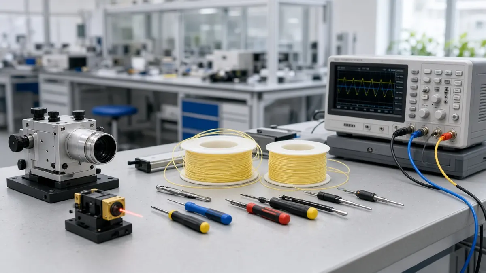

UK puts £78 million into quantum sensing, networking and apprenticeships
Short answer: The UK government announced a £78 million quantum package on 13 October 2026: £50 million for businesses building quantum sensing and positioning, navigation and timing products, £20 million for quantum networking components, and an £8 million expansion of the QuEST apprenticeship programme, according to the Department for Science, Innovation and Technology (DSIT) and UK Research and Innovation (UKRI).
The £50 million is delivered through UKRI's Sensing and Positioning, Navigation and Timing competition. The government says winning projects include railway fault detectors, portable eye scanners and navigation systems that work when GPS fails.
UKRI's £20 million Enabling Commercial Quantum Networking competition will help UK companies build components such as lasers and photonic chips, and the government names Sheffield-based Aegiq as one company it will support.

The QuEST Apprentices expansion aims to equip 150 engineering apprentices with quantum skills by 2030, UKRI says. It includes QuEST North, which extends the programme from businesses incubated at Harwell in Oxfordshire to the North West.
UKRI says the funding is part of the government's mission to make the UK a world leader in quantum sensing by 2030, which it says is backed by up to £2 billion of investment announced earlier this year.